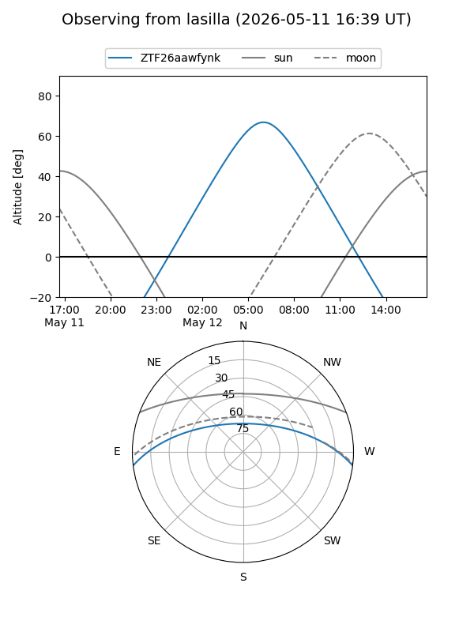
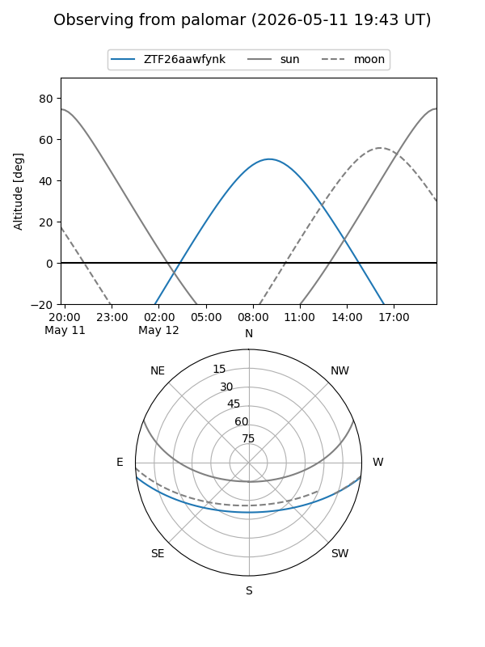

ZTF26aawfynk
Target ZTF26aawfynk at 2026-05-12 09:20
Aliases and brokers:
FINK: link
Lasair: link
ALeRCE: link
alt names
ZTF26aawfynk (ztf,fink_ztf)
Coordinates:
equatorial (ra, dec) = 248.8658,-6.15620
equatorial (HMS+DMS) = 16:35:27.80,-06:09:22.31
galactic (l, b) = (9.9903,+26.47608)
Flags:
Photometry:
last ztfg=19.46
1 ztfg detections
Lightcurve
Visibility


Additional plots